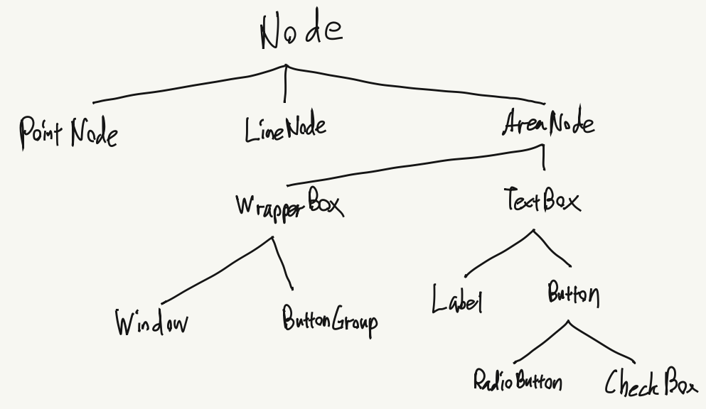

HCI HW2-1 2016320175 이두섭
콘솔 창에서의 명령문을 바탕으로 GUI components를 테스트합니다.
clear(): 콘솔 창을 클리어합니다.
[hw]
hw.nodeStack: 현재까지 생성된 노드들을 포함하는 리스트 Node.stack을 반환합니다.
hw.create_tree(): 빈 Tree를 생성합니다. hw.tree로 접근할 수 있습니다.
hw.clear_tree(): 현재 tree와 Node.stack을 모두 삭제합니다.
hw.print_tree(): 현재 트리를 print합니다.
hw.create_node(): 노드를 알림창의 도움을 받아서 생성합니다. 생성된 노드는 Node.stack에 저장됩니다.
hw.n(ID): 해당 ID를 가진 노드 객체를 Node.stack에서 찾아 반환합니다.
hw.add_node(NODE, PARENT): 현재 tree에 NODE를 PARENT의 child로 추가합니다. PARENT가 null이라면 root로 추가됩니다.
hw.delete_node(NODE): 현재 tree에서 해당 노드 객체를 삭제합니다. Node.stack에는 남아있습니다.
hw.search_node(NODE_FUNC): 현재 tree에서 NODE_FUNC에 맞는 노드를 하나 찾아 반환합니다.
(e.g. hw.tree.search_node(node => node.is_leaf()); 명령문은 말단 노드를 찾아 반환합니다)
hw.search_node_all(NODE_FUNC): 현재 tree에서 NODE_FUNC에 맞는 노드를 모두 찾아 반환합니다.
hw.make_simple_example(): 예시 GUI tree를 생성합니다. 하단에 간단한 창 예제 단락이 작성되어 있습니다.
hw.make_complex_example(): 예시 GUI tree를 생성합니다. 페이지 가장 밑에 있는 이미지를 바탕으로 합니다.
[NodeTypes]
Graphic Node: PointNode, LineNode, AreaNode,
GUI Node : WrapperBox, TextBox, Label,
Button, RadioButton, CheckBox, ButtonGroup,
Window,
[Node Basic]
node.id : 고유한 자연수 id 값
node.type : node의 클래스 타입, 읽기전용.
node.parent : 부모 노드
node.childSet : 자식 노드 집합
node.pos : 부모 노드에 대한 상대 좌표 (좌측 상단 값)
node.x, node.y : node.pos의 x, y좌표
node.is_root()
node.is_leaf()
node.move(x, y) : node.pos를 (x, y)만큼 이동
node.addChild(A) : 전달받은 노드 A를 node의 자식으로 등록
node.deleteChild(A) : 전달받은 노드 A를 node의 childSet에서 삭제
[AreaNode Basic]
anode.shape : anode의 외형을 Shape Enum으로 저장. NONE / RECTANGLE / CIRCLE 셋 중 하나
anode.width
anode.height
anode.borderColor : color는 Color 자료형으로 정의, ColorEnum을 이용해서 값을 정의해도 된다. (color.js 참조)
anode.borderWidth
anode.bgColor
anode.rightPos : anode의 오른쪽 좌표를 반환. anode.pos.move(anode.width, 0)과 같다. 읽기전용.
anode.downPos : anode의 아래쪽 좌표를 반환. anode.pos.move(0, anode.height)와 같다. 읽기전용.
[간단한 창 모양 GUI 트리 생성 예제 - hw.make_simple_example() ]
0. hw.clear_tree() - 트리 초기화
1. hw.create_node() - 2,2 - id가 1인 TextBox 노드(타이틀 부분)를 생성합니다.
1-1. hw.n(1).width = 1000;
hw.n(1).height = 50;
1-2. hw.n(1).text = "TestTitle";
2. hw.create_node() - 2,1 - id가 2인 WrapperBox 노드(몸통 부분)를 생성합니다.
2-1. hw.n(2).width = 1000;
hw.n(2).height = 450;
3. hw.create_node() - 2,4 - id가 3인 Button 노드(닫기 버튼)를 생성합니다.
3-1. hw.n(3).width = 50;
hw.n(3).height = 50;
3-2. hw.n(3).text = "X";
hw.n(3).textColor = ColorEnum.RED;
hw.n(3).shape = Shape.CIRCLE;
4. hw.create_node() - 2,1 - id가 4인 WrapperBox 노드(전체 창 감쌀 Wrapper)를 생성합니다.
4-1. hw.n(4).width = 1000;
hw.n(4).height = 500;
5. hw.create_tree() - 빈 트리를 생성합니다.
6. hw.add_node(hw.n(4), null) - 전체 wrapper를 tree의 root 노드로 등록합니다.
7. hw.add_node(hw.n(1), hw.n(4)) - title 노드를 전체 wrapper의 child로 등록합니다.
8. hw.n(4).addChild(hw.n(2)) - 몸통 부분 노드를 전체 wrapper의 child로 등록합니다.
9. hw.add_node(hw.n(3), hw.n(1)) - 닫기 버튼을 title 노드의 child로 등록합니다.
A. hw.n(2).pos = hw.n(1).downPos - 몸통 부분 노드의 상대위치를 title 노드 아래로 지정합니다.
B. hw.n(3).pos = hw.n(1).rightPos.move(-hw.n(3).width, 0)
- 닫기 버튼을 title 노드의 가장 오른쪽에 위치시킵니다.
C. hw.print_tree() - 결과물을 콘솔 창에 출력합니다.
[이어지는 순회 및 조회 예제]
D. hw.search_node(node => node.type == "Button").print()
- 버튼 클래스의 노드를 찾습니다. id 3인 노드가 반환됩니다.
E. hw.delete_node(hw.n(3)) - 닫기 버튼 노드를 트리에서 삭제합니다.
F. hw.search_node(node => node.type == "Button")
- 아까와 같이 버튼 클래스의 노드를 찾습니다. null이 반환됩니다.
[Class Hierarchy]

[Complex Example View]